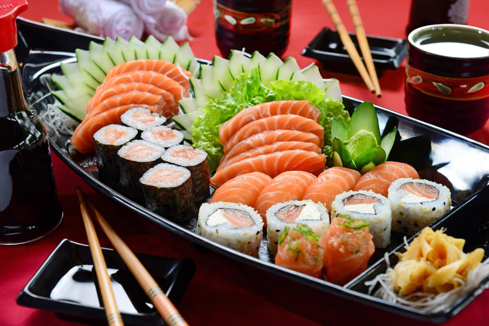
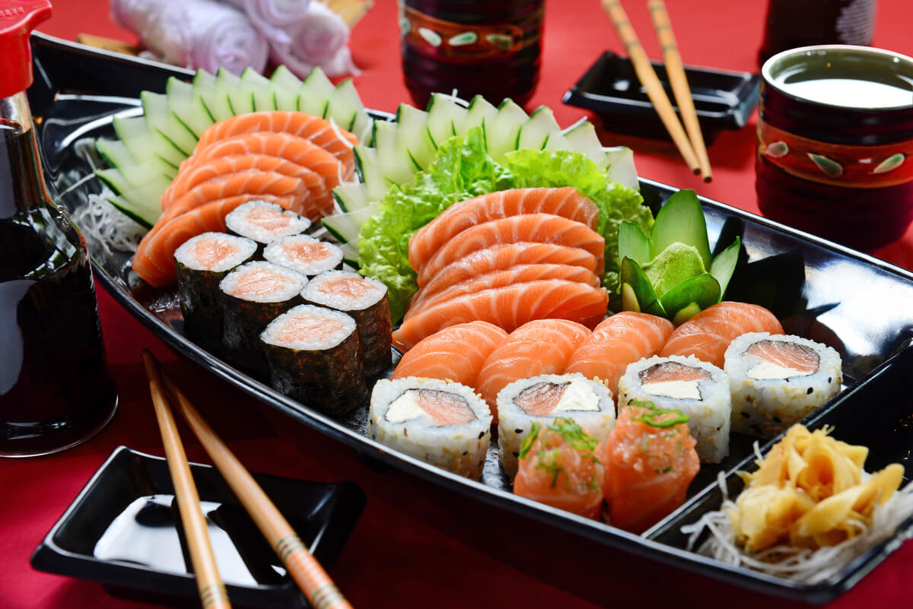

O Mixlix nasceu da paixão por oferecer uma experiência gastronômica autêntica e inovadora. Nosso restaurante é dedicado a explorar os sabores únicos da culinária japonesa, combinando tradição e modernidade em cada prato. Com um ambiente acolhedor e um atendimento atencioso, proporcionamos aos nossos clientes momentos especiais, onde o sabor e a qualidade dos ingredientes são sempre a prioridade. No Mixlix, cada refeição é uma celebração da cultura japonesa e do prazer de comer bem.
Com a proposta de levar ao cliente uma verdadeira imersão nos sabores do Japão, o Mixlix valoriza o frescor e a excelência em cada detalhe. Nossos chefs combinam técnicas tradicionais com toques contemporâneos, criando pratos que agradam tanto os amantes da culinária japonesa clássica quanto os que buscam novas experiências. Do sushi ao ramen, cada opção do nosso cardápio é cuidadosamente elaborada para surpreender o paladar. Além disso, oferecemos um ambiente moderno e descontraído, perfeito para momentos em família, entre amigos ou ocasiões especiais. Aqui, cada visita é uma nova descoberta gastronômica.

No Mixlix, trazemos para você a tradição e a modernidade da culinária japonesa. Nosso cardápio é uma combinação de sabores autênticos, utilizando ingredientes frescos e técnicas refinadas para criar pratos que encantam o paladar.
Do sushi clássico ao contemporâneo, cada prato é elaborado com o objetivo de oferecer uma experiência única, harmonizando delicadeza e inovação. Venha vivenciar o melhor da gastronomia japonesa em um ambiente acolhedor e sofisticado.
 
